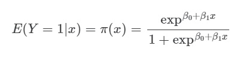

We will employ the Multiple Logistic Regression from the dataset.
We want to predict the relationship between heart attack event with its associated factors. All variables will be used but we will select few variables for the purpose of modelling according to few criteria, such as clinically significant data, data which is highly spelled out in literature and clinical expert opinion.
Assumptions : independence of errors/observations, correctly specified models, correct functional forms, absence of multicollinearity and fixed errors (measured without error)
Workflow Analysis
Goals of model building in our regression models are:
-To find best fitting model -To develop the most parsimonious model -To develop a biologically sound model
We will apply these steps to achieved our goal 1) Data wrangling 2) Univariable Selection One of the variables is the dependent variable. The dependent variable is binary in nature. The other variable is the independent variable.The independent variable can be a numerical variable or can be a categorical variable. The conditional mean of the dependent variable Y given x when the logistic distribution is used (in a case of univariable, model has only 1 predictor) is:

slog
Variable selection -does not consider p-value<0.25 The conditional mean of the dependent variable Y given x when the logistic distribution is used (in a case of univariable, model has k predictor) is writen as a logistic model :
Where:
log model
Check for multicollinearity
Check 2 way interaction
Assess goodness of fit model
Establish final model
Data presentation and Interpretation
Steps
Load Library
library(tidyverse)
Warning: package 'tidyverse' was built under R version 4.3.2
Warning: package 'ggplot2' was built under R version 4.3.2
Warning: package 'tibble' was built under R version 4.3.2
Warning: package 'tidyr' was built under R version 4.3.2
Warning: package 'readr' was built under R version 4.3.2
Warning: package 'purrr' was built under R version 4.3.2
Warning: package 'dplyr' was built under R version 4.3.2
Warning: package 'stringr' was built under R version 4.3.2
Warning: package 'forcats' was built under R version 4.3.2
Warning: package 'lubridate' was built under R version 4.3.2
── Attaching core tidyverse packages ──────────────────────── tidyverse 2.0.0 ──
✔ dplyr 1.1.4 ✔ readr 2.1.4
✔ forcats 1.0.0 ✔ stringr 1.5.1
✔ ggplot2 3.4.4 ✔ tibble 3.2.1
✔ lubridate 1.9.3 ✔ tidyr 1.3.0
✔ purrr 1.0.2
── Conflicts ────────────────────────────────────────── tidyverse_conflicts() ──
✖ dplyr::filter() masks stats::filter()
✖ dplyr::lag() masks stats::lag()
ℹ Use the conflicted package (<http://conflicted.r-lib.org/>) to force all conflicts to become errors
library(broom)
Warning: package 'broom' was built under R version 4.3.2
library(here)
Warning: package 'here' was built under R version 4.3.2
here() starts at C:/Users/User/Documents/R Project DrPH/MyRepoR
library(dplyr)library(psych)
Warning: package 'psych' was built under R version 4.3.2
Attaching package: 'psych'
The following objects are masked from 'package:ggplot2':
%+%, alpha
library(ggplot2)library(corrplot)
Warning: package 'corrplot' was built under R version 4.3.2
corrplot 0.92 loaded
library(caret)
Warning: package 'caret' was built under R version 4.3.2
Loading required package: lattice
Warning: package 'lattice' was built under R version 4.3.2
Attaching package: 'caret'
The following object is masked from 'package:purrr':
lift
library(jpeg)library(gtsummary)
Warning: package 'gtsummary' was built under R version 4.3.2
age sex cp trtbps
Min. :29.00 Min. :0.0000 Min. :0.0000 Min. : 94.0
1st Qu.:48.00 1st Qu.:0.0000 1st Qu.:0.0000 1st Qu.:120.0
Median :55.50 Median :1.0000 Median :1.0000 Median :130.0
Mean :54.42 Mean :0.6821 Mean :0.9636 Mean :131.6
3rd Qu.:61.00 3rd Qu.:1.0000 3rd Qu.:2.0000 3rd Qu.:140.0
Max. :77.00 Max. :1.0000 Max. :3.0000 Max. :200.0
chol fbs restecg thalachh
Min. :126.0 Min. :0.000 Min. :0.0000 Min. : 71.0
1st Qu.:211.0 1st Qu.:0.000 1st Qu.:0.0000 1st Qu.:133.2
Median :240.5 Median :0.000 Median :1.0000 Median :152.5
Mean :246.5 Mean :0.149 Mean :0.5265 Mean :149.6
3rd Qu.:274.8 3rd Qu.:0.000 3rd Qu.:1.0000 3rd Qu.:166.0
Max. :564.0 Max. :1.000 Max. :2.0000 Max. :202.0
exng oldpeak slp caa
Min. :0.0000 Min. :0.000 Min. :0.000 Min. :0.0000
1st Qu.:0.0000 1st Qu.:0.000 1st Qu.:1.000 1st Qu.:0.0000
Median :0.0000 Median :0.800 Median :1.000 Median :0.0000
Mean :0.3278 Mean :1.043 Mean :1.397 Mean :0.7185
3rd Qu.:1.0000 3rd Qu.:1.600 3rd Qu.:2.000 3rd Qu.:1.0000
Max. :1.0000 Max. :6.200 Max. :2.000 Max. :4.0000
thall output
Min. :0.000 Min. :0.000
1st Qu.:2.000 1st Qu.:0.000
Median :2.000 Median :0.000
Mean :2.315 Mean :0.457
3rd Qu.:3.000 3rd Qu.:1.000
Max. :3.000 Max. :1.000
ID age sex cp trtbps
Min. : 1.00 Min. :29.00 Female: 96 Type 0:143 Min. : 94.0
1st Qu.: 76.25 1st Qu.:48.00 Male :206 Type 1: 50 1st Qu.:120.0
Median :151.50 Median :55.50 Type 2: 86 Median :130.0
Mean :151.50 Mean :54.42 Type 3: 23 Mean :131.6
3rd Qu.:226.75 3rd Qu.:61.00 3rd Qu.:140.0
Max. :302.00 Max. :77.00 Max. :200.0
chol fbs restecg thalachh exng
Min. :126.0 False:257 Type 0:147 Min. : 71.0 No :203
1st Qu.:211.0 True : 45 Type 1:151 1st Qu.:133.2 Yes: 99
Median :240.5 Type 2: 4 Median :152.5
Mean :246.5 Mean :149.6
3rd Qu.:274.8 3rd Qu.:166.0
Max. :564.0 Max. :202.0
oldpeak slp caa thall output
Min. :0.000 Type 0: 21 Type 0:175 Type 0: 2 No :164
1st Qu.:0.000 Type 1:140 Type 1: 65 Type 1: 18 Yes:138
Median :0.800 Type 2:141 Type 2: 38 Type 2:165
Mean :1.043 Type 3: 20 Type 3:117
3rd Qu.:1.600 Type 4: 4
Max. :6.200
Looks more organize and better for our analysis later
Data exploration
Histogram for numerical variables and barplot for categorical variables
slr.age <-glm(output ~ age, data = heart1, family =binomial(link ="logit"))summary(slr.age)
Call:
glm(formula = output ~ age, family = binomial(link = "logit"),
data = heart1)
Coefficients:
Estimate Std. Error z value Pr(>|z|)
(Intercept) -2.98760 0.75897 -3.936 8.27e-05 ***
age 0.05153 0.01367 3.770 0.000163 ***
---
Signif. codes: 0 '***' 0.001 '**' 0.01 '*' 0.05 '.' 0.1 ' ' 1
(Dispersion parameter for binomial family taken to be 1)
Null deviance: 416.42 on 301 degrees of freedom
Residual deviance: 401.26 on 300 degrees of freedom
AIC: 405.26
Number of Fisher Scoring iterations: 4
2 Resting Blood Pressure
slr.trtbps <-glm(output ~ trtbps, data = heart1, family =binomial(link ="logit"))summary(slr.trtbps)
Call:
glm(formula = output ~ trtbps, family = binomial(link = "logit"),
data = heart1)
Coefficients:
Estimate Std. Error z value Pr(>|z|)
(Intercept) -2.421015 0.904644 -2.676 0.00745 **
trtbps 0.017067 0.006807 2.507 0.01217 *
---
Signif. codes: 0 '***' 0.001 '**' 0.01 '*' 0.05 '.' 0.1 ' ' 1
(Dispersion parameter for binomial family taken to be 1)
Null deviance: 416.42 on 301 degrees of freedom
Residual deviance: 409.91 on 300 degrees of freedom
AIC: 413.91
Number of Fisher Scoring iterations: 4
3 Cholesterol level
slr.chol <-glm(output ~ chol, data = heart1, family =binomial(link ="logit"))summary(slr.chol)
Call:
glm(formula = output ~ chol, family = binomial(link = "logit"),
data = heart1)
Coefficients:
Estimate Std. Error z value Pr(>|z|)
(Intercept) -0.959845 0.572724 -1.676 0.0938 .
chol 0.003191 0.002272 1.404 0.1603
---
Signif. codes: 0 '***' 0.001 '**' 0.01 '*' 0.05 '.' 0.1 ' ' 1
(Dispersion parameter for binomial family taken to be 1)
Null deviance: 416.42 on 301 degrees of freedom
Residual deviance: 414.41 on 300 degrees of freedom
AIC: 418.41
Number of Fisher Scoring iterations: 4
4 Maximum heart rate achieved
slr.thalachh <-glm(output ~ thalachh, data = heart1, family =binomial(link ="logit"))summary(slr.thalachh)
Call:
glm(formula = output ~ thalachh, family = binomial(link = "logit"),
data = heart1)
Coefficients:
Estimate Std. Error z value Pr(>|z|)
(Intercept) 6.361133 0.986817 6.446 1.15e-10 ***
thalachh -0.043724 0.006531 -6.695 2.16e-11 ***
---
Signif. codes: 0 '***' 0.001 '**' 0.01 '*' 0.05 '.' 0.1 ' ' 1
(Dispersion parameter for binomial family taken to be 1)
Null deviance: 416.42 on 301 degrees of freedom
Residual deviance: 358.73 on 300 degrees of freedom
AIC: 362.73
Number of Fisher Scoring iterations: 4
5 Previous peak in ECG
slr.oldpeak <-glm(output ~ oldpeak, data = heart1, family =binomial(link ="logit"))summary(slr.oldpeak)
Call:
glm(formula = output ~ oldpeak, family = binomial(link = "logit"),
data = heart1)
Coefficients:
Estimate Std. Error z value Pr(>|z|)
(Intercept) -1.1096 0.1812 -6.124 9.13e-10 ***
oldpeak 0.9352 0.1386 6.749 1.49e-11 ***
---
Signif. codes: 0 '***' 0.001 '**' 0.01 '*' 0.05 '.' 0.1 ' ' 1
(Dispersion parameter for binomial family taken to be 1)
Null deviance: 416.42 on 301 degrees of freedom
Residual deviance: 354.43 on 300 degrees of freedom
AIC: 358.43
Number of Fisher Scoring iterations: 4
Categorical: sex, ep, fbs, restecg, exng, slp, caa, thall we are not using tidy to standardized our SLogR presentation. tidy mode looks cleaner but summary gave more info
1 Sex
slr.sex <-glm(output ~ sex, data = heart1, family =binomial(link ="logit"))summary(slr.sex)
Call:
glm(formula = output ~ sex, family = binomial(link = "logit"),
data = heart1)
Coefficients:
Estimate Std. Error z value Pr(>|z|)
(Intercept) -1.0986 0.2357 -4.661 3.15e-06 ***
sexMale 1.3130 0.2742 4.788 1.68e-06 ***
---
Signif. codes: 0 '***' 0.001 '**' 0.01 '*' 0.05 '.' 0.1 ' ' 1
(Dispersion parameter for binomial family taken to be 1)
Null deviance: 416.42 on 301 degrees of freedom
Residual deviance: 391.19 on 300 degrees of freedom
AIC: 395.19
Number of Fisher Scoring iterations: 4
2 Chest pain type
slr.cp <-glm(output ~ cp, data = heart1, family =binomial(link ="logit"))summary(slr.cp)
Call:
glm(formula = output ~ cp, family = binomial(link = "logit"),
data = heart1)
Coefficients:
Estimate Std. Error z value Pr(>|z|)
(Intercept) 0.9808 0.1878 5.224 1.75e-07 ***
cpType 1 -2.4972 0.4132 -6.043 1.51e-09 ***
cpType 2 -2.3100 0.3248 -7.111 1.15e-12 ***
cpType 3 -1.8075 0.4905 -3.685 0.000229 ***
---
Signif. codes: 0 '***' 0.001 '**' 0.01 '*' 0.05 '.' 0.1 ' ' 1
(Dispersion parameter for binomial family taken to be 1)
Null deviance: 416.42 on 301 degrees of freedom
Residual deviance: 331.23 on 298 degrees of freedom
AIC: 339.23
Number of Fisher Scoring iterations: 4
3 Fasting blood sugar
slr.fbs <-glm(output ~ fbs, data = heart1, family =binomial(link ="logit"))summary(slr.fbs)
Call:
glm(formula = output ~ fbs, family = binomial(link = "logit"),
data = heart1)
Coefficients:
Estimate Std. Error z value Pr(>|z|)
(Intercept) -0.1952 0.1254 -1.557 0.119
fbsTrue 0.1507 0.3235 0.466 0.641
(Dispersion parameter for binomial family taken to be 1)
Null deviance: 416.42 on 301 degrees of freedom
Residual deviance: 416.20 on 300 degrees of freedom
AIC: 420.2
Number of Fisher Scoring iterations: 3
4 Resting ECG
slr.restecg <-glm(output ~ restecg, data = heart1, family =binomial(link ="logit"))summary(slr.restecg)
Call:
glm(formula = output ~ restecg, family = binomial(link = "logit"),
data = heart1)
Coefficients:
Estimate Std. Error z value Pr(>|z|)
(Intercept) 0.1499 0.1654 0.906 0.36472
restecgType 1 -0.6785 0.2361 -2.874 0.00406 **
restecgType 2 0.9487 1.1665 0.813 0.41606
---
Signif. codes: 0 '***' 0.001 '**' 0.01 '*' 0.05 '.' 0.1 ' ' 1
(Dispersion parameter for binomial family taken to be 1)
Null deviance: 416.42 on 301 degrees of freedom
Residual deviance: 406.60 on 299 degrees of freedom
AIC: 412.6
Number of Fisher Scoring iterations: 4
5 Exercise Induced Angina
slr.exng <-glm(output ~ exng, data = heart1, family =binomial(link ="logit"))summary(slr.exng)
Call:
glm(formula = output ~ exng, family = binomial(link = "logit"),
data = heart1)
Coefficients:
Estimate Std. Error z value Pr(>|z|)
(Intercept) -0.8216 0.1524 -5.392 6.98e-08 ***
exngYes 2.0169 0.2826 7.137 9.53e-13 ***
---
Signif. codes: 0 '***' 0.001 '**' 0.01 '*' 0.05 '.' 0.1 ' ' 1
(Dispersion parameter for binomial family taken to be 1)
Null deviance: 416.42 on 301 degrees of freedom
Residual deviance: 357.18 on 300 degrees of freedom
AIC: 361.18
Number of Fisher Scoring iterations: 4
6 Slope
slr.slp <-glm(output ~ slp, data = heart1, family =binomial(link ="logit"))summary(slr.slp)
Call:
glm(formula = output ~ slp, family = binomial(link = "logit"),
data = heart1)
Coefficients:
Estimate Std. Error z value Pr(>|z|)
(Intercept) 0.2877 0.4410 0.652 0.51414
slpType 1 0.3314 0.4752 0.697 0.48564
slpType 2 -1.3958 0.4821 -2.895 0.00379 **
---
Signif. codes: 0 '***' 0.001 '**' 0.01 '*' 0.05 '.' 0.1 ' ' 1
(Dispersion parameter for binomial family taken to be 1)
Null deviance: 416.42 on 301 degrees of freedom
Residual deviance: 367.99 on 299 degrees of freedom
AIC: 373.99
Number of Fisher Scoring iterations: 4
7 Number of Major Vessels
slr.caa <-glm(output ~ caa, data = heart1, family =binomial(link ="logit"))summary(slr.caa)
Call:
glm(formula = output ~ caa, family = binomial(link = "logit"),
data = heart1)
Coefficients:
Estimate Std. Error z value Pr(>|z|)
(Intercept) -1.06087 0.17296 -6.134 8.59e-10 ***
caaType 1 1.80054 0.31664 5.686 1.30e-08 ***
caaType 2 2.54895 0.45280 5.629 1.81e-08 ***
caaType 3 2.79547 0.64967 4.303 1.69e-05 ***
caaType 4 -0.03774 1.16758 -0.032 0.974
---
Signif. codes: 0 '***' 0.001 '**' 0.01 '*' 0.05 '.' 0.1 ' ' 1
(Dispersion parameter for binomial family taken to be 1)
Null deviance: 416.42 on 301 degrees of freedom
Residual deviance: 339.02 on 297 degrees of freedom
AIC: 349.02
Number of Fisher Scoring iterations: 4
8 Thalium Stress test result
slr.thall <-glm(output ~ thall, data = heart1, family =binomial(link ="logit"))summary(slr.thall)
Call:
glm(formula = output ~ thall, family = binomial(link = "logit"),
data = heart1)
Coefficients:
Estimate Std. Error z value Pr(>|z|)
(Intercept) 4.462e-14 1.414e+00 0.000 1.000
thallType 1 6.931e-01 1.500e+00 0.462 0.644
thallType 2 -1.276e+00 1.427e+00 -0.895 0.371
thallType 3 1.156e+00 1.431e+00 0.808 0.419
(Dispersion parameter for binomial family taken to be 1)
Null deviance: 416.42 on 301 degrees of freedom
Residual deviance: 327.57 on 298 degrees of freedom
AIC: 335.57
Number of Fisher Scoring iterations: 4
From the univariable analysis, we built our model using clinically significant data, data which is highly spelled out in literature and clinical expert opinion.
Multiple Logistic Regression
More than one independent covariates (predictors)
We estimate the logit or the log odds. We used summary to see the results stored as mylogit We used coefficients to examine the regression coefficients
Model A : Multiple logistic regression model without interaction
Calculating the odds ratios and their confidence intervals To obtain the odds ratios and their 95% CI, we need to exponentiate using exp the regression coefficients or the betas just exponentiate
Interactions in statistical models signify that the effect of multivariable on the outcome; heart attack event depends on the value of another variable which is context of sex and fasting blood sugar
mlr.age.sex.cp.trtbps.fbs.exng.int <-glm(output ~ age + sex + cp + trtbps + fbs + exng + sex*fbs,family ='binomial'(link = logit), data = heart1)summary(mlr.age.sex.cp.trtbps.fbs.exng.int)
Call:
glm(formula = output ~ age + sex + cp + trtbps + fbs + exng +
sex * fbs, family = binomial(link = logit), data = heart1)
Coefficients:
Estimate Std. Error z value Pr(>|z|)
(Intercept) -6.56720 1.53164 -4.288 1.81e-05 ***
age 0.06001 0.01882 3.188 0.001433 **
sexMale 2.05534 0.40450 5.081 3.75e-07 ***
cpType 1 -2.15035 0.47979 -4.482 7.40e-06 ***
cpType 2 -2.00113 0.38520 -5.195 2.05e-07 ***
cpType 3 -2.08739 0.55734 -3.745 0.000180 ***
trtbps 0.01750 0.00909 1.926 0.054150 .
fbsTrue 1.40674 0.81394 1.728 0.083933 .
exngYes 1.18057 0.34429 3.429 0.000606 ***
sexMale:fbsTrue -1.90905 0.94663 -2.017 0.043729 *
---
Signif. codes: 0 '***' 0.001 '**' 0.01 '*' 0.05 '.' 0.1 ' ' 1
(Dispersion parameter for binomial family taken to be 1)
Null deviance: 416.42 on 301 degrees of freedom
Residual deviance: 271.00 on 292 degrees of freedom
AIC: 291
Number of Fisher Scoring iterations: 5
It shows the interaction of the model with sex and fbs is significant. Thus, we keep model B.
Inference
Likelihood ratio test. We compare between Model A and B using anova.
anova(mlr.age.sex.cp.trtbps.fbs.exng, mlr.age.sex.cp.trtbps.fbs.exng.int, test ='Chisq')
Analysis of Deviance Table
Model 1: output ~ age + sex + cp + trtbps + fbs + exng
Model 2: output ~ age + sex + cp + trtbps + fbs + exng + sex * fbs
Resid. Df Resid. Dev Df Deviance Pr(>Chi)
1 293 274.96
2 292 271.00 1 3.959 0.04662 *
---
Signif. codes: 0 '***' 0.001 '**' 0.01 '*' 0.05 '.' 0.1 ' ' 1
The p-value of 0.04662 associated with the change in deviance suggests that adding the interaction term does significantly improve the fit of Model B compared to Model A. So, we choose Model B with interaction as our preliminary final model.
Variable Deviance Power(s)
------------------------------------------------
Cycle 1
age
409.907
398.903 1
397.397 -2
393.962 3 3
trtbps
401.255
398.903 1
398.67 3
398.503 3 3
Tansformation
shift scale
age 0 100
trtbps 0 100
Fractional polynomials
df.initial select alpha df.final power1 power2
age 4 1 0.05 1 1 .
trtbps 4 1 0.05 1 1 .
Transformations of covariates:
formula
age I((age/100)^1)
trtbps I((trtbps/100)^1)
Deviance table:
Resid. Dev
Null model 416.4197
Linear model 398.9035
Final model 398.9035
summary(lin.age.trtbps)
Call:
glm(formula = output ~ I((age/100)^1) + I((trtbps/100)^1), family = binomial(link = "logit"),
data = heart1)
Coefficients:
Estimate Std. Error z value Pr(>|z|)
(Intercept) -4.0943 1.0594 -3.865 0.000111 ***
I((age/100)^1) 4.5760 1.4127 3.239 0.001199 **
I((trtbps/100)^1) 1.0792 0.7089 1.522 0.127911
---
Signif. codes: 0 '***' 0.001 '**' 0.01 '*' 0.05 '.' 0.1 ' ' 1
(Dispersion parameter for binomial family taken to be 1)
Null deviance: 416.42 on 301 degrees of freedom
Residual deviance: 398.90 on 299 degrees of freedom
AIC: 404.9
Number of Fisher Scoring iterations: 4
The transformed age variable has a significant impact on the response variable. The transformed trtbps variable is not statistically significant at the 0.05 significance level.
Diagnostics plots
library(generalhoslem)
Warning: package 'generalhoslem' was built under R version 4.3.2
Loading required package: reshape
Warning: package 'reshape' was built under R version 4.3.2
Attaching package: 'reshape'
The following object is masked from 'package:lubridate':
stamp
The following object is masked from 'package:dplyr':
rename
The following objects are masked from 'package:tidyr':
expand, smiths
Loading required package: MASS
Attaching package: 'MASS'
The following object is masked from 'package:gtsummary':
select
The following object is masked from 'package:dplyr':
select
library(ResourceSelection)
Warning: package 'ResourceSelection' was built under R version 4.3.2
ResourceSelection 0.3-6 2023-06-27
library(ROCR)
Warning: package 'ROCR' was built under R version 4.3.2
library(pROC)
Warning: package 'pROC' was built under R version 4.3.2
Type 'citation("pROC")' for a citation.
Attaching package: 'pROC'
The following objects are masked from 'package:stats':
cov, smooth, var
logitgof(heart1$output, fitted(final.m), g =10)
Warning in logitgof(heart1$output, fitted(final.m), g = 10): At least one cell
in the expected frequencies table is < 1. Chi-square approximation may be
incorrect.
Hosmer and Lemeshow test (binary model)
data: heart1$output, fitted(final.m)
X-squared = 2.3091, df = 8, p-value = 0.97
hoslem.test(heart1$output, fitted(final.m), g =10)
Warning in Ops.factor(1, y): '-' not meaningful for factors
Hosmer and Lemeshow goodness of fit (GOF) test
data: heart1$output, fitted(final.m)
X-squared = 302, df = 8, p-value < 2.2e-16
There is discrepancy between the results could be due to variations in the statistical methodology or algorithms used by each function to calculate the Hosmer-Lemeshow test statistic could lead to different results. Educated guess: low expected frequencies in variable of type of chest pain.
roc_curve <-roc(output ~predict(final.m, type ="response"), data = heart1)
Setting levels: control = No, case = Yes
Setting direction: controls < cases
auc(roc_curve)
Area under the curve: 0.8712
plot(roc_curve, col ="red", main ="ROC Curve")
Area under Receiver of Operating Characteristic Curve (AUC-ROC):
AUC-ROC is 87.12%, the model is considered good discriminating effect.
Hence, all of above goodness of fit test shows that our model has good fit.
Prelim final plots
plot(final.m)
Influential
infl <-influence.measures(final.m)
We use augment() to generate the residuals values
data2.pred.res <-augment(final.m)data2.pred.res
# A tibble: 302 × 14
.rownames output age sex cp trtbps fbs exng .fitted .resid .hat
<chr> <fct> <int> <fct> <fct> <int> <fct> <fct> <dbl> <dbl> <dbl>
1 1 No 63 Male Type… 145 True No -0.783 -0.868 0.0835
2 2 No 37 Male Type… 130 False No -2.02 -0.500 0.0214
3 3 No 41 Female Type… 130 False No -3.98 -0.192 0.00716
4 4 No 56 Male Type… 120 False No -1.20 -0.725 0.0332
5 5 No 57 Female Type… 120 False Yes 0.134 -1.23 0.0406
6 6 No 57 Male Type… 140 False No 1.36 -1.78 0.0175
7 7 No 56 Female Type… 140 False No -2.91 -0.326 0.0138
8 8 No 44 Male Type… 120 False No -1.92 -0.523 0.0232
9 9 No 52 Male Type… 172 True No -0.884 -0.831 0.0728
10 10 No 57 Male Type… 150 False No -0.467 -0.986 0.0334
# ℹ 292 more rows
# ℹ 3 more variables: .sigma <dbl>, .cooksd <dbl>, .std.resid <dbl>
Method : Standardized residuals Keep standardized residuals between 2 and -2 (values above 2 or lower than −2 considered as influential observations)
With one year increase of age, the odds for heart attack increase by 1.09 with 95% CI 1.04-1.14, when adjusting to other covariates or in other words, increase risk by 9%.
Being male, has odds of 19.5 of having heart attack with 95% CI 7.63, 55.7 as compared to female and after adjusting with other variables.
Chest pain type 1 (atypical angina) has odds of 0.05 for heart attack event while chest pain type 2 (non angina) has odds of 0.08 and chest pain type 3 (asympyomatic) has odds of 0.05 compared to Type 0(typical angina pain) after adjusting with other covariates with 95% CI 0.01, 0.15 , 0.03, 0.18 and 0.01, 0.17 respectively.
1 mmHg increase of resting blood pressure will increase odds of having heart attack by 1.03 with 95% CI 1.01, 1.05 after adjusting with other variables.
Fasting blood sugar more than 6.7mmol/l have odds of heart attack by 7.54 with 95% CI 1.15, 45.5 after adjusting with other variables.
Person with exercise induce angina has odds of heart attack by 5.41 with 95% CI 2.51, 12.2 after adjusting with other variables.
Male patient with FBS more than 6.7mmol/L has odds of heart attack 0.05 with 95% CI of 0.01-0.48 after adjusting to other covariates when inferring to the this study population. Explanation: maybe male with DM is more likely to develop silent heart attack due to recall bias or interview bias